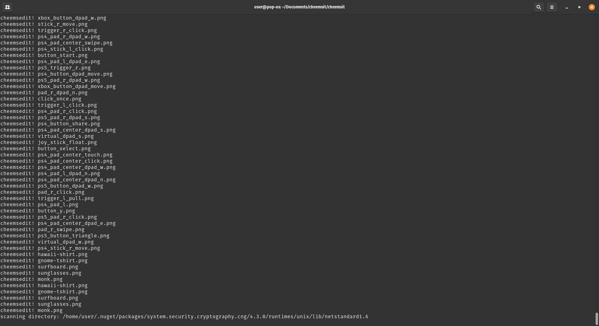
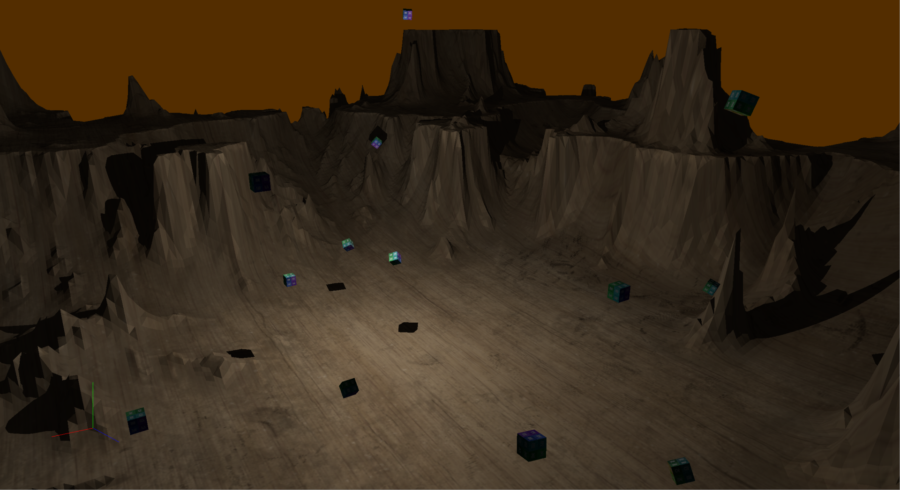

Linux file scanner
A recursive file scanner detecting image files written in Assembly
and with linux system-calls as its only dependency.
 Vulkan renderer A real-time renderer featuring model-loading, multithreading and an interactive user-interface.